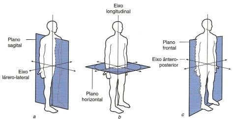
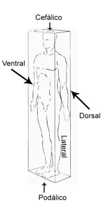
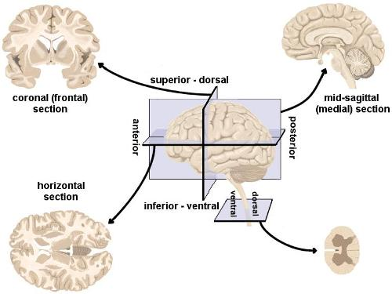

Na posição anatômica, o corpo é referenciado de acordo com três planos mutuamente ortogonais:
Sagital
O Plano Sagital, divide o corpo simetricamente em laterais direita e esquerda.
Pode ser dividido em: sagital mediano (divide o corpo em metades idênticas) e sagital paramediano (divide o corpo em metades de tamanhos diferentes).
As ações articulares ocorrem em torno de um eixo horizontal ou transversal e incluem os movimentos de flexão e extensão.
Coronal ou frontal
O Plano Coronal ou Frontal, divide o corpo em partes anterior (ventral) e posterior (dorsal).
As ações articulares ocorrem em torno de um eixo ântero-posterior (AP) e incluem a abdução e a adução.
Transversal - Axial ou Horizontal
E por último, o Plano Transversal, Axial ou Horizontal que divide o corpo em partes superior (cranial) e inferior (caudal).
As ações articulares ocorrem em torno de um eixo longitudinal ou vertical e incluem a rotação medial – lateral e pronação – supinação.
Os termos que descrevem os movimento podem ser usados para várias articulações em todo o corpo, sendo que alguns termos são específicos para certas regiões, mas sempre respeitando a posição anatômica.

Planos de delimitação/orientação do corpo humano
Na posição anatômica o corpo humano pode ser delimitado por planos tangentes à sua superfície, os quais, com suas intersecções, determinam a formação de um sólido geométrico, um paralelepípedo.
Tem-se assim, para as faces desse sólido, os seguintes planos correspondentes:
A) Dois planos verticais, um tangente ao ventre — plano ventral ou anterior — e outro ao dorso — plano dorsal ou posterior.
Estes e outros a eles paralelos são também designados como planos frontais, por serem paralelos à “fronte“.
Via de regra, as denominações ventral e dorsal são reservadas ao tronco e anterior e posterior, aos membros;

B) Dois planos verticais tangentes aos lados do corpo — planos lateraisdireito e esquerdo;
C) Dois planos horizontais, um tangente à cabeça — plano cranial (cefálico) ou superior — e outro à planta dos pés — plano podálico (de podos – pé) ou inferior.
O tronco isolado é limitado, inferiormente, pelo plano horizontal que tangencia o vértice do cóccix, ou seja : o osso que no homem é o vestígio da cauda de outros animais. Por esta razão, este plano é denominado caudal.
Resumo:

Eixos do corpo humano
Quando é observado o movimento do corpo humano, aplica-se o conhecimento de eixo.
Os eixos são linhas imaginárias que atravessam os planos do corpo perpendicularmente para possibilitar movimentos.
Lembrando que estes planos e eixos serão sempre aplicados nas partes do corpo humano que permitem graus de movimentos amplos (articulações diartrose).
Eixo Látero-Lateral: estende-se de um lado ao outro, tanto da direita para esquerda ou vice-versa.
Também é conhecido como Transversal ou Horizontal.
Possibilita os movimentos de flexão e extensão.
Eixo Ântero-Posterior: estende-se em sentido anterior para posterior, perpendicular ao plano frontal.
Também é chamado de sagital.
Possibilita os movimentos de abdução e adução.
Eixo Longitudinal: estende-se de superior para inferior ou vice-versa, perpendicular ao plano transversal.
Possibilita os movimentos de rotação lateral e rotação medial.